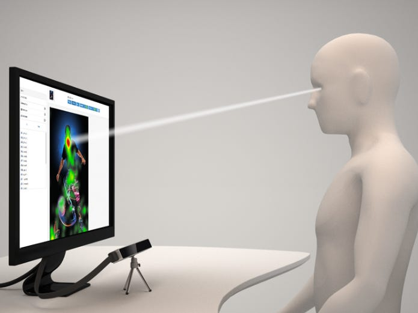

Descripción
El eye tracking, también conocido como seguimiento ocular, es el proceso de registrar y analizar los movimientos oculares de las personas para conocer los elementos que naturalmente llamaron su atención.
Beneficios
El eye tracking se usa para rastrear y analizar el movimiento de los ojos de las personas. Ayuda en investigación, usabilidad de interfaces, publicidad y atención médica.
En investigación, el eye tracking se emplea para comprender cómo las personas procesan visualmente la información, lo que puede revelar patrones de atención, áreas de interés y la eficacia de ciertos elementos visuales, como anuncios, interfaces de software o diseño de productos.
En el ámbito de la usabilidad, el eye tracking ayuda a diseñadores y desarrolladores a mejorar la experiencia del usuario al identificar dónde se centra la atención de los usuarios y qué elementos pueden requerir ajustes para hacer que la interacción sea más intuitiva y eficiente.
En publicidad, el eye tracking se utiliza para evaluar la efectividad de anuncios y campañas, determinando qué elementos visuales atraen más la atención de los espectadores y cómo se pueden optimizar para lograr un mayor impacto.
En la atención médica, el eye tracking se utiliza en la evaluación y diagnóstico de trastornos oculares, neurológicos y de comunicación, permitiendo a los profesionales de la salud entender mejor el comportamiento ocular de los pacientes.